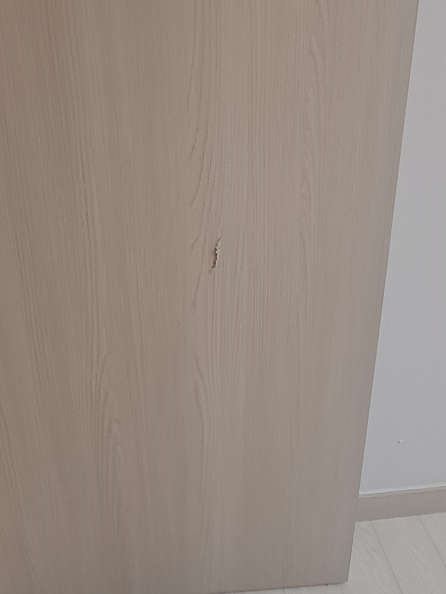
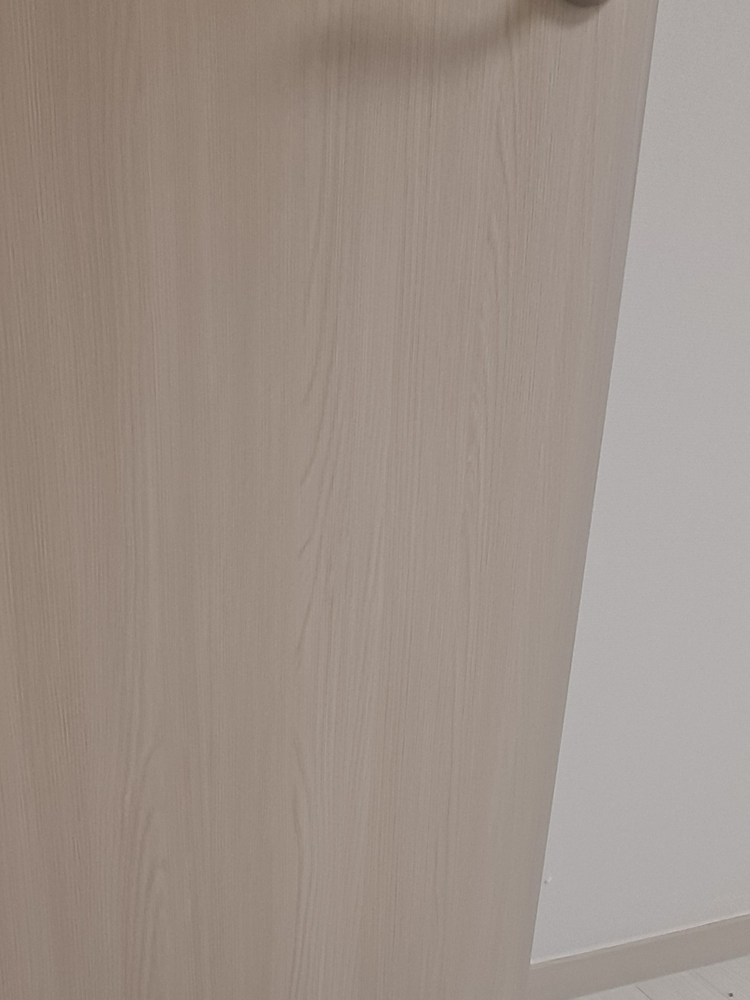

기존 방문 유지
멀쩡한 필름은 그대로 두고 긁히고 찢어진 부분만 복원합니다.
방문이 긁히면서 밝은 나뭇결 필름이 찢어지고 안쪽 바탕재가 드러난 현장입니다. 필름 업체에 문의했지만 기존과 똑같은 필름이 없어 색상을 맞추려면 문 전체를 시공해야 했고, 작은 손상 때문에 공사 범위가 커지는 대신 기존 방문을 살리는 부분복원을 선택하셨습니다.

방문 필름은 한 가지 색처럼 보여도 가느다란 나뭇결과 미세한 명암이 반복됩니다. 파인 내부를 평탄하게 보강한 뒤 주변 색상을 현장에서 맞추고, 기존 세로 결의 방향과 굵기를 재현해야 수리 부위의 이질감을 줄일 수 있습니다.
손상이 한두 곳에 국한됐다면 동일 필름을 새로 구하거나 문 전체를 다시 감싸지 않고 필요한 부분만 복원할 수 있습니다.
멀쩡한 필름은 그대로 두고 긁히고 찢어진 부분만 복원합니다.
비슷한 새 필름으로 전체를 바꾸는 대신 기존 색상과 결에 맞춥니다.
문 전체 필름 제거와 재시공 없이 비교적 빠르게 마무리합니다.
작은 손상 때문에 문 전체를 시공하는 비용 부담을 줄일 수 있습니다.
찢어진 필름과 파인 바탕을 정리한 뒤 표면 높이, 현장 조색과 세로 나뭇결을 단계별로 맞춥니다.
손잡이와 주변을 보호하고 필름과 바탕재의 손상 범위를 확인합니다.
들뜨고 약해진 필름 가장자리를 정리해 안정적인 바탕을 만듭니다.
긁혀 파인 부분을 보강하고 주변 방문과 높이를 맞춥니다.
밝은 바탕색과 세로 결의 방향·굵기를 주변 필름에 맞춥니다.
광도와 질감을 정리하고 여러 각도에서 복원 상태를 확인합니다.
필름이 찢어진 내부를 보강하고 표면 높이를 맞춘 뒤 기존 방문의 밝은 색과 세로 나뭇결을 이어 마감했습니다.

“필름으로 한 게 아닌데, 수리한 곳이 어딘지 모르겠어요~ 진짜 복원 잘하시네요!!”
| 비교 항목 | 부분복원 | 전체 필름 시공 |
|---|---|---|
| 비용 | 손상 부위 중심으로 비교적 부담이 적음 | 문 전체 자재와 시공 비용이 발생 |
| 작업시간 | 현장 상태에 따라 비교적 짧음 | 기존 필름 제거와 전체 시공 시간이 필요 |
| 생활 불편 | 작업 범위가 작아 불편을 줄일 수 있음 | 문 전체와 부속물 주변까지 작업 범위가 넓음 |
| 완성도 | 기존 색상과 나뭇결에 맞춰 손상 부위를 연결 | 새 필름으로 문 전체를 통일 |
| 효과 | 국소 긁힘을 복원하고 기존 마감을 유지 | 노후·들뜸이 넓은 필름을 전체 교체 |
방문 전체와 손상 부위를 함께 보내주시면 필름 색상과 파손 상태를 확인해 상담합니다.